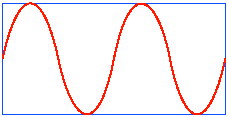
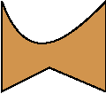
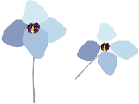

See the book at amazon.co.uk or amazon.com
Related Books

See Digital Multimedia at amazon.co.uk or amazon.com

See Web Design: A Complete Introduction at amazon.co.uk or amazon.com
The authors are not responsible for the content of any external sites linked to from digitalmediatools.org
All material on this site is ©2007–2010 MacAvon Media and may not be reproduced without permission.
Illustrator Exercise Files
The material offered for download in this section of the site is copyright. You may not publish any of this material in any form, reproduce it on public Web sites, or pass it off as your own. It is supplied for use in private and institutional study only.
Technical Drawing

Draw a rectangular box and try to fit a sine-like curve inside it, as shown here. (You can't actually construct an exact sine curve out of Bézier curves, but make it symmetrical and as much like a sine wave as you can.) You will probably want to draw some extra construction lines first. (The grid tool may come in handy.)
Manipulating Objects
 Download the simple shape [Illustrator:119.7kB]
This simple shape can be used to experiment with the transformations described on pages 213–218. Because it is asymmetrical, it is easy to see what is going on. Open the file and use the transformation tools and commands and the Transform and Control panels to apply all possible transformations, singly and in combination, by all possible methods.
 Download the poppy image [Illustrator:99.5kB]
The image on the right of this pair was made just by transforming the separate objects making up the image on the left. Download the original file and see if you can recreate the second image from it.
Returning to the original image, either manipulate the anchor points or use the pencil tool to reshape each petal of the poppy, so that it has a more uniform rounded shape.
Read the sections on Transforming Objects and Reshaping (pages 213–219) before doing this exercise.
Appearance
Download the frog example [Illustrator:323.0kB]
This basic frog shape has been filled very crudely using a coarse gradient mesh. See if you can improve the fill, to produce a more attractive or realistic colouring. If you want to start over again (probably a good idea) there is a copy of the basic outline on a hidden layer, which you can add your own gradient mesh or other fill. Note: allow plenty of time for this exercise, and take frequent rests to avoid injury.
Download the pattern fills example [Illustrator:358.9kB]
We don't describe pattern fills in any detail in the book, but you can learn a bit about how they work by playing with this image, applying different pattern fills to the frogs – just click on a pattern in the Swatches palette. Use Illustrator Help to find out how to create some patterns of your own, and use them as fills.
Download the simple sketch [Illustrator:239.3kB]
Read the section on Live Paint, on pages 226–228. Starting each time with a clean version of the file supplied, colour it in different ways to make several coloured illustrations using the Live Paint bucket. If you wish, alter or add to the sketch to create new possibilities for live painting.
Try applying the Scribble effect (found on the Effect>Stylize sub-menu) to the uncoloured sketch. Experiment with different settings until you get a result you like. Now try using Live Paint to colour in parts of the scribbled drawing.
Download the weather vane design [Illustrator:120.4kB]
Read the section on 3D Effects, on pages 235–240. Use the supplied file to experiment with rotating, extruding and revolving. (Begin by trying to reproduce Figure 5.41 on page 235.) You might like to change the colour of parts of the design before you apply the effects to get a more interesting result and to see the mapping between the different parts and the final 3D result. Experiment with the different shading algorithms, as well as the parameters to each effect. (Note: this exercise is likely be demanding on your processor.)
Bitmaps
Download the photograph of a butterfly [PSD:1.2MB]
Read the section on Live Trace on pages 258–261. Using the photograph of the butterfly supplied, make several different live tracings including a simple black and white version, a posterized version in very few colours and a high-fidelity version. Experiment with the different settings available under Tracing Options until you get results which are graphically pleasing. Note: the file supplied here is at a lower resolution than the version illustrated on page 260 in order to be less demanding on your processor while it is being traced.
Magic Wand and Alignment
Download Figure 5.69 [Illustrator:187.4kB]
Use this file to practise selecting combinations of objects with the magic wand, as described in the "Try This" exercise and related text on page 263.
Download the misaligned arrows [Illustrator:190.5kB]
Read the section on Alignment on pages 272–274. Align and distribute the anchor points in the file supplied so that the arrows' heads and tails line up neatly with one another, and the arrows all point to a single point, as illustrated on the right of Figure 5.79 on page 273.